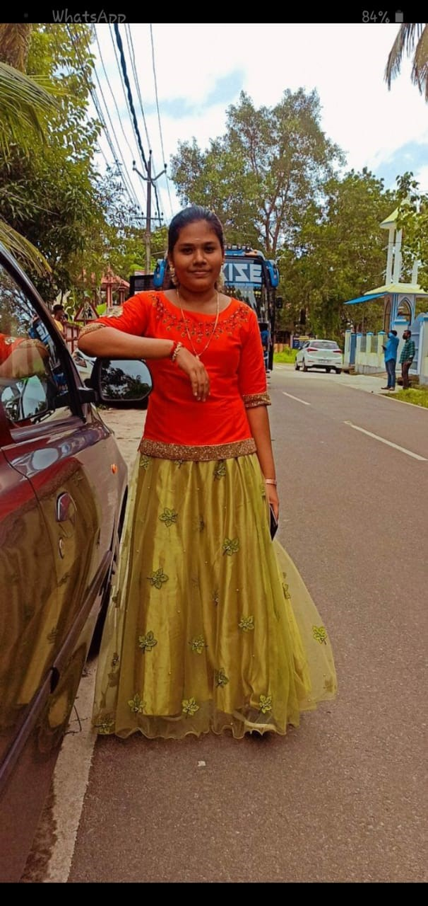

ANJANA KRISHNAN K R

ABOUT
My name is Anjana Krishnan K R.I am from Mannar Alappuzha District.I completed my bachelors degree from PMG College Valanjavattom.
PERSONAL DETAILS
Father Name:Radhakrishnan
Date Of Birth:27/7/2001
Phone Number:9567815483
Email id:anjanakrishnan498@gmail.com
ADDRESS
KAVUMKAL MADOM,KURATTIKADU MANNAR PO ,ALAPPUZHA
EDUCATION DETAILS
MASTER OF COMPUTER APPLICATION(MCA)-MACFAST COLLEGE THIRUVALLA-2022-24(MG UNIVERSITY)
BACHELOR OF COMPUTER APPLICATION(BCA)-PMG COLLEGE VALANJAVATTOM-2019-22(MG UNIVERSITY)
HIGHER SECONDARY(12th)-(2017-19)
HIGH SCHOOL(10th)-(2016)
LOCATION MAP
SOCIAL MEDIA